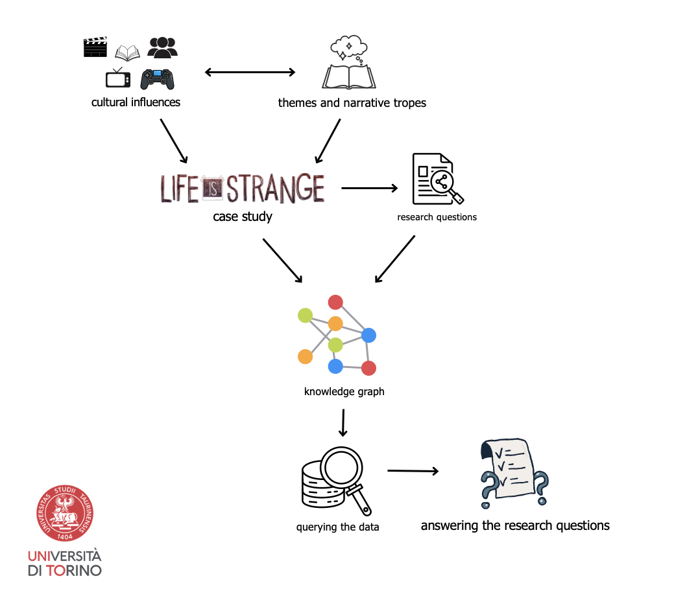

Case Study
Intertextual references in Life Is Strange (2015): how different media is referenced by video game elements, themes, and narrative structure.
Intertextual references in Life Is Strange (2015): how different media is referenced by video game elements, themes, and narrative structure.
Manual data collection and curation; modelling nodes and relationships in Neo4j. Cypher queries can reveal patterns in intertextual references and narrative themes.
Accredited community sources; Mapping node, relationship, and property terminology to extablished vocabularies (NOnt, VGO, DCMT).
Already functional prototype for community-friendly interactive resources and further DH/HCI research.
